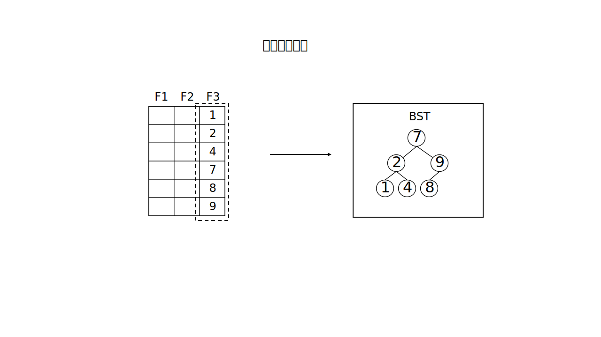

概述
数蚕内存数据库支持的最小操作单位为表,即不存在库概念；数蚕内存数据库基于列式存储，支持C++基础数据结构类型，包括整型(包括u08、i08、u16、i16、u32、i32、u64、i64)、浮点型(包括float、double)、字符串型(string)、日期型(date)、时间型(time)、 日期时间型(datetime)。
数蚕内存数据库任意字段隐含一个基于平衡树的索引，详见create语句，sql语句中save和load语句支持表的保存与加载。
说明：数蚕内存数据库查询语言(以下简写为sql)，类似标准查询语言(以下简写为SQL)，基础语法结构兼容，整体处理流程不兼容SQL。
注意以下sql操作方法不同于标准SQL：
数蚕内存数据库支持的特性：
系统组成
数蚕内存数据库包含两种模式可执行程序和开发SDK和示例。
本地模式直接运行相应sct_local_mem.exe；进入执行环境后，输入"help"命令查看帮助信息或直接输入sql语句执行，相应sql规范见sql快速指导部分。
网络模式服务端为sct_s_mem.exe,服务端使用sct_mdb.toml作为配置文件，目前配置内容仅为绑定端口和用户组信息，toml文件规范详见相关规范(注意数蚕使用的配置文件不支持toml表数组)。
服务端为sct_s_mem.exe启动时会默认执行工作目录下的"init.sql"文件, 这对于内存数据库的初始数据加载非常有用。
网络模式客户端为sct_c_mem.exe,客户端运行必须指定用户名密码和可选的IP端口。以下为有效的运行示例。
sct_c_mem.exe user user_pwd
sct_c_mem.exe user user_pwd 192.168.1.11 55555
网络模式验证策略默认为第一次登陆必须指定用户名密码，3次错误停止1分钟，再2次错误停止30分钟，再1次错误停止15天，再1次错误永远封禁，直至服务重启。
相应系统文件可能不包含本帮助文档，完整的帮助参考文件为本页面网站内容为最新参考。
sql查询流程
内存实际存储是列式存储
数蚕数据库数据处理流程如下：
where语句内容必为使用索引(此处不同于标准SQL语句)的检索条件，并应用条件过滤数据行。
行信息取出列内容并进行表达式计算，生出数据集。
数据集可以进行横向纵向（join/union）两种扩展，扩展为更大单一数据集。
单一集进行排序、过滤、分组聚合、投影、重命名和重计算几种后置运算操作。
排序

过滤有以下五种操作：
行内过滤
行间过滤，复杂度n*n
行邻过滤
行范围过滤
存在/子查询过滤
分组聚合
投影
重命名
重计算
sql基础规范
本文用于快速指导写出简单有效的数蚕数据库sql语句。
sql语句由DDL、DML组成，其中DML由
select、
insert、
delete、
update、
rows_of、
cols_of、
fields_of、
show tables等组成；DDL由
create、
alter、
drop、
save、
load、
exec等组成。
每一个sql语句非常数表达式或注释内容可接任意多个空白或注释字符，空白字符为0x09到0x0c(注意空白字符不包含0x0d，这意味着sql语句执行行尾默认为unix格式)或0x20的ASCII字符。
所有sql语句大小写严格区分，字符编码为唯一编码UTF-8。
每一个sql语句结束符为";"，结束符在不影响语句解析时可以省略。
单行注释
//这是一个注释多行注释
/*这是一
个注释
*/
整数
0 //有符号或无符号整数
1 //省略符号整数
100 //省略符号整数
+1 //有符号整数
-100 //有符号整数
-1000 //有符号整数
+0b000 //有符号二进制整数
-0xa0b3 //有符号十六进制整数
0xA0cD //无符号大小写混写十六进制整数
-847u2 //有符号两字节长整数
56u1 //无符号一字节长整数
0x0au1 //无符号十六进制一字节整数浮点数
+0. //无小数部分正浮点数
-0.01 //仅小数部分负浮点数
-100.0 //仅整数部分负浮点数
-100e20 //仅整数及正指数部分负浮点数
1.25E-32 //小数及负指数部分正浮点数
1.25E+20 //小数及正指数部分正浮点数
1.00E20f //严格四字节浮点数
1.00E20d //严格八字节浮点数字符串
"a和中文bc" //包含中英文的有效字符串(UTF-8编码)
"ab和中文c\"\'\\\a\b\f\n\r\t\v" //包含控制转义的有效字符串
"ab和中文c\x0a\x0001\uaabb\Uaabbccdd" //包含十六进制转义和Unicode转义的有效字符串
@"aabbcc(018d7##@!@^_""AA6)aabbcc" //以aabbcc为分割的原始字符串日期型
2020-02-03 //2020年2月3日
0020-01-31 //20年1月31日时间型
18:59:31 //18时59分31秒
00:00:01.100 //0时0分1.1秒日期时间型
2020-02-03 18:59:31.123 //2020年2月3日18时59分31.123秒表达式
表达式使用C语言表达式基础结构，保留对应运算符号优先级
id //域表达式表示对应字段值
(id) //括号表达式表示优先括号内容求值
id+10 //加性表达式表示域字段与常数值10的和
id+max(grade) //加性表达式表示域字段与grade域的最大值之和
id*sin(id) //积性表达式表示id域与id域的sin值之积
id << 10 //移位表达式表示id域左移10位的值
id&&sin(id)>0 //逻辑与表达式表示id和sin(id)>0的逻辑与结果
id/sin(id) //积性表达式表示id与sin(id)之商
id&min(id) //位与表达式表示id与min(id)位与结果
id!=0||id==10 //逻辑或表达式表示id不等于0与id等于10的逻辑或结果
表达式类型转换及函数处理遵循以下原则
若数据类型可依据C++语言隐式转换为目标类型，则依C++隐式转换为目标类型。
函数处理过程为：若函数参数为字段，则函数作用于字段每一行的值，若函数参数为常数值，则使用常数值作为函数参数，若两参数
行数不相等，则使用较长行数作为输出结果，不足的较短参数使用最后一位连续填充至等长。可用于表达式中函数
函数后为功能解释及使用示例
类型转换函数
x2i08 //任意数据类型转换为一字节有符号整数 x2i08(type), x2i08(2.0)
x2i16 //任意数据类型转换为两字节有符号整数 x2i16(type), x2i16(2.0)
x2i32 //任意数据类型转换为四字节有符号整数 x2i32(type), x2i32(2.0)
x2i64 //任意数据类型转换为八字节有符号整数 x2i64(type), x2i64(2.0)
x2u08 //任意数据类型转换为一字节无符号整数 x2u08(type), x2u08(2.0)
x2u16 //任意数据类型转换为两字节无符号整数 x2u16(type), x2u16(2.0)
x2u32 //任意数据类型转换为四字节无符号整数 x2u32(type), x2u32(2.0)
x2u64 //任意数据类型转换为八字节无符号整数 x2u64(type), x2u64(2.0)
x2flt //任意数据类型转换为四字节浮点数 x2flt(id), x2flt(10)
x2dbl //任意数据类型转换为八字节浮点数 x2dbl(id), x2dbl(10)
x2str //任意数据类型转换为字符串 x2str(id), x2str(10)
x2date //任意数据类型转换为日期 x2date(b_date),x2date("2012-03-05")
x2time //任意数据类型转换为时间 x2time(b_time),x2time("18:35:24")
x2datetime //任意数据类型转换为日期时间 x2datetime(b_dt),x2datetime("2012-03-05 18:35:24")
聚集函数
sum //求某一列之和 sum(id)
product //求某一列积 product(id)
min //求某一列最小值 min(id)
max //求某一列最大值 max(id)
avg //求某一列均值 avg(id)
count //求某一列总数 count(id)
sort //排序某列 sort(id)
unique //去重某一列 unique(sort(id))
count_unique //获取去重后数目 count_unique(sort(id))
范围函数
first //取某一列第一个元素 first(id)
last //取某一列最后一个元素 last(id)
first_k //取某一列前k个元素 first_k(id,10)
last_k //取某一列最后k个元素 last_k(id,20)
range //取某一列区间元素 range(id,1,5)
nth //取某一列第n个元素 nth(id,10)
字符串函数
lcase //转换字符串为小写 lcase("Abd")
ucase //转换字符串为大写 ucase("abc")
concat //连接两个字符串 concat("abc","012")
length //求字符串长度 length("NAME")
substr //取字符串从索引起始至固定数目的子字符串 substr(name, 1, 4)
all_case //获取所有大小写组合字符串 all_case("Insert")
starts //判定字符串是否以某串开始 starts(name, "Jim")
contain //判定字符串是否包含目标 contain(desc, "error")
ends //判定字符串是否以某串结束 ends(word, "es")
replace //替换字符串的子串为新的串 replace(name, 2, 4, "abc")
trim_l //移出字符串左边连续空格 trim_l(name)
trim_r //移出字符串右边连续空格 trim_r(name)
trim //移出字符串两边连续空格 trim(name)
reg_match //正则表达式匹配(使用ECMA-262(2011)标准) reg_match(id,"[2-9]+.*")
fuzzy_match //匹配字符差异的模糊检索 fuzzy_match(id,"what"),fuzzy_match(type,"system", 5)
数学函数
abs //求数值的绝对值 abs(value)
ceil //求数值的不小于给定值的最小整数 ceil(value)
floor //求数值的不大于给定值的最大整数 floor(value)
round //求数值的四舍五入值 round(3.4)
exp //求数值的e的定幂 exp(value)
pow //求数值的幂 pow(id,2.0)
pi //常数值Π pi()
sqrt //求数值的开平方 sqrt(value)
log //求数值的自然对数 log(value)
log2 //求数值的以2底对数 log2(value)
log10 //求数值的以10底对数 log10(value)
log1p //求数值+1的自然对数 log1p(value)
sin //求数值的正弦值 sin(value)
cos //求数值的余弦值 cos(value)
tan //求数值的正切值 tan(value)
asin //求数值的反正弦值 asin(value)
acos //求数值的反余弦值 acos(value)
atan //求数值的反正切值 atan(value)
e //数学常数e e()
内部函数
raw2hex //内存十六进制显示 raw2hex(id)
hex2raw //十六进制转为内存数据表示 hex2raw("00aabb")
row_id //输出行号 row_id()
id //输出内部id id()
now_id //获取内部最大的未使用id now_id()
hash_passwd //生成某字符串的hash密码(用于配置文件) hash_passwd("mypass")
统计函数
var //输出方差 var(id)
stddev //标准差 stddev(id)
序列函数
seq //输出序列0到n seq(10), seq(count(id)), seq(3)*3
rand //输出n个0到1.0随机数 rand(10)
constants //输出n个常数 constants(1,10)， constants("sss",10)
日期函数
last_day //返回日期月份的最后一天 last_day(date())
is_leap //返回是否是闰年 is_leap(date())
now //返回当前日期时间 now()
date //返回当前日期 date()
time //返回当前时间 time()
add_day //返回n天之后时间或日期时间 add_day(now(),100)
add_nanosec //返回n纳秒之后时间或日期时间 add_nanosec(time(),10000000)
sub_day //返回n天之前时间或日期时间 sub_day(now(),100)
sub_nanosec //返回n纳秒之前时间或日期时间 sub_nanosec(time(),10000000)
day_diff //返回日期或日期时间天数之差 day_diff(x2date("2012-01-01"),date())
nanosec_diff //返回时间或日期时间的纳秒之差 nanosec_diff(x2datetime("2012-01-01 18:24:25"),now())
year_of //返回日期或日期时间的年部分 year_of(date())
month_of //返回日期或日期时间的月部分 month_of(date())
day_of //返回日期或日期时间的天部分 day_of(date())
hour_of //返回时间或日期时间的时部分 hour_of(time())
minute_of //返回时间或日期时间的分钟部分 minute_of(time())
second_of //返回时间或日期时间的秒部分 second_of(time())
nanosec_of //返回时间或日期时间的纳秒部分 nanosec_of(time())
date_of //返回日期时间的日期部分 date_of(now())
time_of //返回日期时间的时间部分 time_of(now())
weekday //返回日期或日期时间的星期(0为周一) weekday(now())
weekday_name //返回日期或日期时间的星期名称 weekday_name(now())
weekday_cname //返回日期或日期时间的星期中文名称 weekday_cname(now())where条件允许使用关系运算、范围运算、in运算及逻辑运算
id>=10 //大于等于逻辑运算
id>=all (select id from t2) //大于等于子查询全部结果的逻辑运算
id==any (select id from t2) //等于子查询任意结果的逻辑运算
id==any (1,3,5,7) //等于集合的任意结果的逻辑运算
id==10 //等于逻辑运算
id!=10 //不等于逻辑运算
id>=10&&id<=20 //关系运算之间的逻辑与运算
id>=10||(id < 5&& id > 1) //关系运算之间的逻辑或运算
10 <= id <= 20 //关系运算的小于等于、小于等于运算
10 < id <= 20 //关系运算的小于、小于等于运算
first //范围运算的第一个
last //范围运算的最后一个
first 100 //范围运算的前100个
last 100 //范围运算的后100个
range 10 100 //范围运算的第10到100个
nth 10 //范围运算的第10个的数
id max //值范围运算的最大的一个
id min //值范围运算的最小的一个
id max 100 //值范围运算的最大的前100个
id min 100 //值范围运算的最小的前100个
id in (1,2,3,4,7) //in运算取id为1,2,3,4,7的id
id in (select id from t2); //取出id属于子表达式中的结果
id not in (select id from t2); //取出id不属于子表达式中的结果
注意以下为无效的where条件
10 < id //字段名id应该放在前面select语句
select * from table1;
//从table1选出所有字段
select id from tab2;
//从tab2选出id字段
select id /sin(id) from tab2 where id < 10;
//从tab2种选出id小于10的id数据并求id除以sin(id)的值
select max(id) from tab2 where id < 10&&id > 3;
//从tab2中选出大于3小于10的最大id
select id << 10 from tab2 where id!=3
//从tab2中选出id不等于3的id并左移10位
select sin(id),name into t2 from t1 where id < 10;
//从t1中选出id小于10以sin(id),name为列插入t2
select * from t1 where id in (select id2 from t2 where id2 > 10);
//从t1中选出当id在t2中当id2大于10的id2中t1的全部
select * from t1 where id < 10 order by id, name asc;
//从t1中选出当id小于10的全部后按id和name排字典升序
select * from t1 where id < 10 group sum(id) by name;
//从t1中选出当id小于10的全部后用name来分组sum(id)
select * from t1 where id < 10 all_each on distinct;
//从t1中选出当id小于10的全部后过滤所有行去重
select * from t1 where id < 10 all_each on id==_id && name==_name;
//从t1中选出当id小于10的全部后过滤所有行id相同和name相同的数据,_表示上一集合的每一个
select * from t1 where id < 10 adj on id>_id && name==_name;
//从t1中选出当id小于10的全部后过滤行邻id大于上一个id和name相同的数据,_表示上一行
select * from t1 where id < 10 inner on id==name;
//从t1中选出当id小于10的全部后过滤行内id和name相同的数据
select * from t1 where id < 10 first;
//从t1中选出当id小于10的全部后过滤保留第一行
select * from t1 where id < 10 first 30;
//从t1中选出当id小于10的全部后过滤保留前30行
select * from t1 where id < 10 range 30 40;
//从t1中选出当id小于10过滤保留30行到40行范围内的数据
select id1,name from t1 where id < 10 exists (select id from t2 where id==id1);
//从t1中选出当id小于10的并且在t2中存在的id1和name
select id as nid,name from t1 where id < 10 not exists (select id from t2 where id==nid);
//从t1中选出当id小于10的并且在t2中不存在id等于nid的nid和name
select * from t1 where id < 10 recompute id=id+10;
//从t1中选出当id小于10的全部后重计算id等于id加10
select * from t1 where id < 10 recompute id+=10,name=x2str(id);
//从t1中选出当id小于10的全部后重计算列id等于id加10，name等于转换成字符串的id
select * from t1 where id < 10 project except id;
//从t1中选出当id小于10的全部后投影保留除id以外的列数据
select * from t1 where id < 10 project id;
//从t1中选出当id小于10的全部后投影保留列id
select * from t1 where id < 10 rename id newid;
//从t1中选出当id小于10的全部后重命名id为newid
select * from t1 where id < 10 project id range 30 40 group sum(id) by id order by id rand rename id newid;
//从t1中选出当id小于10的全部后投影id，过滤30到40范围内的数据，用id来分组sum(id)，按id随机排序，重命名id为newid
select * from t1 where id1 < 10 join (select * from t2 where id2 < 10 on id1==id2);
//从t1中选出当id1小于10的全部后横向扩展从t2中选出当id2小于10在id1等于id2时的全部
select sin(seq(count(id))+1), id, name from t1 where id < 10 union (select * from t2 where id < 10);
//从t1中选出当id小于10的sin(seq(count(id))+1), id, name纵向扩展从t2中选出id小于10的全部
select sin(id) as sinid,id from t1 where id < 10 inner on sinid < id;
//从t1中选出当id小于10的sin(id)作为sinid和id过滤保留行内sinid小于id的数据
select * from t1 export as csv split by "," path = "t1.csv";
//选出t1所有字段导出到以逗号为分割的t1.csv文件
select * from t1 export as csv split by "," path += "t1.csv";
//选出t1所有字段导出到或替换以逗号为分割的t1.csv文件insert语句
insert into tab1 (name,id) values("张三",100); //单条插入
insert into tab2 (val,type)values(1.00,1)(2.00,2)(3.00,3); //多条插入
insert into t2 (id,name) select id,name from t1; //插入子查询结果
insert into t2 (id,name) select seq(10)+1,"name"+x2str(seq(10)+1); //插入自定义数据
注意数蚕内存数据库不支持null字段，所以insert必须为每一字段指定值delete语句
delete from tab1 where id < 10; //从tab1中删除id小于10的所有数据update语句
update tab1 set name="张三",id=10 where id==5;
//更新tab1中id等于5的name字段为张三id为10
update tab1 set value=10 where __id==5;
//更新tab1中内部系统id等于5的value为10(注意__id为系统保留关键字，是id()函数输出的结果，仅用于双等号查询条件)create语句
create table tab1 (id u08 (false, false));
//创建表tab1，初始字段为id类型为一字节无符号整型，不允许重复
create table tab1 (val float(),name string(true));
//创建表tab1，初始字段val为浮点型不允许重复不允许自增，字段name为字符串型且允许重复
注意目前字段第二参数为保留参数，实际使用无效果alter语句
alter table tab1 add id u08 (false, false); //tab1中增加id字段
alter table tab1 modify id u08 (false, false); //tab1中修改id字段类型，修改会清空之前字段数据，请备份
alter table tab1 rename id newid; //tab1中重命名id字段为newid
alter table tab1 drop id; //tab1中删除id字段drop语句
drop table tab1 //删除表tab1truncate语句
truncate table t1; //快速清空t1并保留数据结构save语句
save tab1 as bin path+="tab1.bin" //保存表tab1为二进制数据文件，保存的文件名为tab1.bin,若存在文件则替换
save tab1 as sql path="tab1.sql" //保存表tab1为sql数据文件，保存的文件名为tab1.sql
load语句
注意：使用load时表不能存在
load tab1 from bin path="tab1.bin"
//加载表tab1的二进制数据文件，从文件中加载表tab1到数据库中
load tab1 from sql path="tab1.sql"
//加载表tab1的sql数据文件，从文件中加载表信息到数据库中(注意表名tab1忽略，导入表名由sql文件内容决定)import语句
注意：使用import时表必须存在
import t1 from csv split by "\t" path="t1.csv" //以\t为分隔符将t1.csv导入到t1中
import t1 from csvs path="t1.csvs" //将t1.csvs导入到t1中(csvs文件表示字符串转换为ASCII码16进制字符)字段名
abc
abc0123
ABC_abc
[有效非@字符串(见字符串)]表名
abc
abc0123
ABC_abc
[有效非@字符串(见字符串)]rows_of
rows_of tab1 //获取tab1的行数cols_of
cols_of tab1 //获取tab1的列数fields_of
fields_of tab1 //获取tab1的字段名show tables
show tables //获取数据库中的所有表名exec
exec "data.sql"
//执行sql文件的所有语句atom_exec
atom_exec insert into t1 (id,name) select 1,"sss";delete from t1; commit
//事务性执行多个以";"为间隔,以commit为结尾的语句(隔离级别为最高级别，通俗讲，要么全部成功，要么全部失败，多语句只
支持insert,update,delete)backup
backup as bin path="b1.sbk" //备份整个数据库为二进制数据并保存在b1.sbk文件中
backup as sql path+="b1.sbk" //备份整个数据库为sql数据并替换b1.sbk文件restore
restore from sql path="b1.sbk" //从sql备份文件b1.sbk还原整个数据库
restore from bin path="b1.sbk" //从二进制备份文件b1.sbk还原整个数据库优化建议
数蚕内存数据库内部使用BST作为索引，针对每一列查询时检索数据通过BST树构造查询结果，非常适合小范围区间查询；where语句内容是检索条件的第一级过滤条件，是决定输出行数的最重要部分，查询条件应优先保证where部分过滤充分。
where条件查询时优先使用a <=id <=b而不是id>= a&&id <=b 的形式的查询条件，前者会直接使用内部区间算法完成，后者会分别查询两部分区间进行集合求交运算。
where条件优先使用&&，尽量避免使用||逻辑运算。
where条件尽量不使用!=表达式。
优先使用rows_of获取表的行数，而不是count字段。
对于大数据表低有效数据优先使用查询过滤in进行初次过滤。
对于大数据集多有效数据可根据条件使用exists进行过滤。
sql解析时会缓存解析之后的语法树，建议尽量合并insert语句，避免多次解析。
优先使用where语句过滤数据集，减少使用数据集后置操作处理。
sql语句表达式求值较之C语言较慢，尽量避免使用大量表达式处理；大量表达式处理可以在解析表达式获取后使用C语言重新处理。
大批量数据导入时优先使用load指令，次优使用import语句，最后使用exec或单独insert语句。
开发说明
数蚕内存数据库使用C++编写，网络端提供包装的C/C++/Java(包含JDBC)/Python语言接口，开发库位于sdk目录中。相应目录并包含一份简单的使用代码示例。
安装包内提供vs2019的Windows动态链接库，位于sdk/dll目录中; 同样有Linux系统的G++ 8.2.0动态库在so目录中。头文件位于sdk/inc目录中。
基本函数包括连接、退出服务端、执行sql语句、获取数据集行列信息及值信息。以下为一个完整的C语言接口示例(位于sdk/sql_lib_sample.c)：
#include <stdlib.h>
#include <stdio.h>
#include "sql_lib.h"
int main(int argc, char** argv) {
if(!connect_to_server("192.168.5.10", 55555, "user", "user")){ return -1; }
const char* s = "create table tab1 (id u32(true), name string());";
void* d = exec(s, strlen(s));
if (d == NULL) { printf("execute sql failed\n"); return 0; }
del_datas(d);
s = "insert into tab1 (id,name) select seq(1000000), x2str(seq(1000000)+10);";
d = exec(s, strlen(s));
if (d == NULL) { printf("execute sql failed\n"); return 0; }
del_datas(d);
s = "select id,name from tab1;";
d = exec(s, strlen(s));
//d = exec("select id,name from tab1 where id < 10;");
if( d == NULL ){ printf("execute sql failed\n"); return 0; }
print(d);
//print_bymyself(d);
del_datas(d);
s = "drop table tab1;";
d = exec(s, strlen(s));
exit_to_server();
return 0;
}
常见问题
网络连接不成功
1，数蚕本地端不支持网络功能，使用客户端连接时确保服务端打开；默认配置文件中sct_mdb.toml，server段port指定本地链接端口。确保相应端口未被占用。
2，数蚕使用登录验证策略。确保操作次数未超过阈值要求。
where语句不支持
数蚕where语句不兼容标准SQL内容，相关语句如行内条件过滤(id==name)、exist、group by等需要转换为数据后置处理操作。
函数reg_match工作不正常
数蚕正则表达式解析库是ECMA-262(2011版)的实现，兼容大部分正则表达式语法，另新增\h匹配中文\H匹配非中文边界字符。正则表达式库为避免特殊情况下性能陷阱，默认使用非回溯匹配，即.*会匹配所有，在使用时应尽量避免使用.*。
fuzzy_match特别慢
默认模糊匹配默认会匹配差异长度低于一半的所有匹配结果，因此匹配算法效率上不适用于长度较长字符串。
错误反馈
数蚕内存数据库经过详细充分测试，但仍然可能无法避免部分未知错误，相关错误请发送问题描述至admin@shucantech.com。感谢您的反馈！